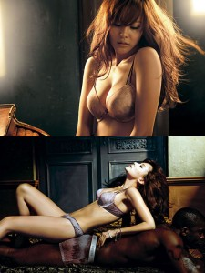

Câu Truyen Nguoi Lon về nhóm nhạc nữ Mắt Ngọc sẽ làm các bạn hiểu biết thêm về giới sau hậu trường bí ẩn sau bức màn … đầy dâm dục – đây là câu Truyen Sex sáng tác và không có thật
Có lẻ mọi người ai cũng quá biết các cô nàng xinh đẹp quyến rũ của nhóm Mắt Ngọc-một nhóm nhạc Nữ nỗi tiếng nhất Việt Nam trong suốt 10 năm nay. Đặc biệt, các nàng tiên nữ Duy Uyên, Thuý Nga, Hoàng Oanh thật sự đã tạo nên những cảm hứng ái ân bất tận cho tất cả cánh đàn ông chúng ta. Tiếc thay, cô nàng nóng bỏng vag gợi tình nhất: Duy Uyên đã lấy chồng và sang Mỹ định cư, nhưng ngay sau đó, nhóm Mắt Ngọc đã kịp thời bổ sung thành viên nữ Ngọc Dung, một cô nàng cũng cực kỳ xì tin và nóng bỏng… Có thể nói rằng, các nàng tiên Mắt Ngọc đã góp phần khiến cho chúng ta cảm thấy sung sướng và hứng thú hơn khi được nhìn ngắm những thân thể ngọc ngà căng tràn nhựa sống, được nghe giọng hát của các nàng hàng ngày, dù chỉ là trên truyền hình, băng đĩa…
Dưới đây là một phần trong bộ truyện dâm về nhóm Mắt Ngọc đã rất nỗi tiếng trên các box truyện người lớn. Mình xin được copy lại cho mọi người, nhất là dành cho những anh em say mê Mắt Ngọc. Chỉ tiếc là truyện này kết thúc sớm quá và hiện nay chưa có ai sáng tác thêm. Vậy, nếu cao thủ nào có hứng thú, xin vui lòng viết thêm, hoặc sáng tác mới về Mắt Ngọc cho anh em cùng thưởng thức nhé

PHẦN 1:
Tôi là một Fan cuồng nhiệt của nhóm nhạc Mắt Ngọc với 4 nàng ca sĩ xinh như mộng còn đang tuổi trăng tròn Duy Uyên , Thuý Nga , Quỳnh Anh và Thanh Ngọc. Mỗi nàng đẹp một vẻ nhưng đúng thật là 10 phân vẹn mười . Tôi không bỏ lỡ bất cứ đợt trình diễn nào của các nàng và cũng không tiếc công sức , tiền bạc săn lùng những album mới , những tạp chí có đăng hình , viết bài về tứ đại mỹ nhân của mình .
Không những chỉ say mê những bài hát dễ thương được trình bày qua 4 giọng ca sôi nổi , trẻ trung mà tôi còn si mê cả vẻ đẹp hàm tiếu ngây thơ của các nàng . Trước tiên là Duy Uyên , nàng có một gương mặt thật đẹp với má lúm đồng tiền xinh xắn , đôi môi mọng đỏ khêu gợi khiến người ta không chỉ muốn ngắm mà còn thích được cắn vào . Mới bước vào tuổi mười bảy mà thân hình của nàng đã thật nảy nở và thật gợi tình , tuy có hơi mũm mĩm một chút không hiểu là do dạo này nàng hay ăn hàng khuya sau mỗi buổi biểu diễn hay là đã có bàn tay sóc của gã nhạc sĩ đỡ đầu Thanh Tùng . Tôi thật như điên lên mỗi lần nhìn Duy Uyên nhún nhảy trên sân khấu , bộ ngực căng mọng rung rinh dới làn áo thun theo những điệu nhạc, đã vậy nàng lại thường xuyên mặc mini jupe trắng bó sát lấy phần mông tròn căng đến nỗi tôi có thể thấy rất rõ những đường hằn của quần lót như chực bung ra mỗi lần nàng nhảy mạnh . Cặp đùi của Duy Uyên thì thật hết chê , tuy hơi mập nhưng nó thật trắng và mịn màng .
Thuý Nga không có vẻ đẹp bốc lửa như Duy Uyên nhưng nàng có vẻ đẹp á đông thật đài các và kiêu sa , nhìn nàng khiến ta liên tưởng đến các Ma nữ trong tuyện Liêu Trai Chí Dị của Bồ Tùng Linh , mà nam giới chúng ta ai cũng sẵn sàng đánh đổi mạng sống để có một đêm ân ái cận kề với người đẹp . Thân hình nàng cao ráo gọn gàng như người mẫu thời trang , lại thêm làn da trắng như bông bưởi làm nàng luôn nổi bật mỗi khi xuất hiện trên sân khấu . Hơn thế nữa nàng lại rất thích mặc đồ thun lửng của hãng thời trang WOW để như cố tình khoe khoang những đường cong chết người dưới làn vải mỏng hay vùng eo thon nuột nà cùng với khoảng rốn huyền hoặc . Còn tôi , luôn mơ tưởng được gặp nàng một chiều mưa bay khi tan trường , tà áo dài trắng thật mỏng và sũng nước phô bày mọi đường cong tuyệt mỹ trên cơ thể dậy thì , mưa cứ bay bay …
Quỳnh Anh thì nhỏ nhắn nhất nhóm , nàng hơi mảnh khảnh nhưng lại rất có duyên , không có vẻ gợi tình ngay cái nhìn đầu tiên nhưng nếu để ý bạn sẽ dễ dàng nhận thấy nàng có sức cuốn hút mãnh liệt . Từ ánh mắt long lanh đến nụ cười chúm chím , từ làn mái tóc đuôi gà nhí nhảnh đến làn da rám nắng khoẻ mạnh dễ làm cho ta liên tưởng đến những người đẹp xứ Hawaii với những bộ ngực trần săn mọng , những đường eo cong hút sâu và vùng bụng toả sáng bởi khoảng sẫm diệu kỳ , mời mọc ta lao vào những cuộc ân ái thâu đêm …
Người làm tôi ngạc nhiên nhất trong nhóm là Thanh Ngọc , mới năm trước khi nhóm Mắt Ngọc vừa trình làng , nàng trông thật khiêm tốn và rụt rè như một cô bé chưa bước qua tuổi dậy thì . Vậy mà bỗng chốc nay đã trở nên một cô gái thật hấp dẫn . Thân thể nàng tròn trịa nổi bật nhất là bộ ngực no tròn như của người mẫu Thanh Mai chuyên chụp ảnh quảng cáo cho đồ lót của hãng Vera, nếu tinh mắt ta dễ nhận thấy hai đầu nhũ hoa xinh xắn hơi cộm lên trên làn áo mỏng . Phần mông của nàng mới thật tuyệt vời , không mũm mĩm như của Duy Uyên , Không thon gọn như của Quỳnh Anh mà lại tròn đầy và khiêu khích lạ kỳ . Mỗi khi nàng bận bộ đầm mỏng bẵng lụa tơ tằm màu mỡ gà , tôi còn thấy thấp thoáng cả đường đăng ten quần lót ôm ỡm ờ một vòng từ hai nửa bờ mông đến vùng bụng phía trước . Và làn vải mỏng cũng như muốn phô bày cả những hoa văn thêu trên trên quần lót của nàng cùng với những đường cong tuyệt mỹ của phần thân sau . Mỗi khi gặp nàng mặc đồ như vậy là tôi muốn xông tới , xé toang từng mảnh vải trên người nàng dằn nàng xuống bất cứ đâu và làm tình điên dại từ phía sau …
Tôi từ khi nào đã như yêu thầm trộm nhớ 4 nàng trong nhóm Mắt Ngọc, ban ngày tôi luôn tơ tưởng tới giọng hát , khuôn mặt , thân hình các nàng , ban đêm là những giấc mơ triền miên mà trong đó tôi luôn được ôm ấp , vuốt ve , được làm tình như điên dại với cả 4 nàng tiên của mình …
Rồi những khát khao cháy bỏng đó đã thôi thúc tôi thực hiện một kế hoạch hoàn hảo rắp tâm chiếm đoạt cho được những người tình trong mộng đó …
Và ngày đó đã đến , hôm ấy được biết Mắt ngọc có Show biểu diễn tại khu vui chơi Đầm Sen cùng với những ca sĩ khá có tên tuổi nhân dịp tết dương lịch 2002 , tôi mua vé vào xem thật sớm và ngồi ngay hàng trên cùng , có lẽ vì đây là sân khấu tạm ngoài trời nên các nhà xây dựng thiết kế hơi cao so với tầm mắt của những khán giả hàng đầu như tôi khiến tôi phải ngửa cổ lên để xem biểu diễn . Những show đầu tiên thật nhàm chán, duy chỉ có tiết mục của Đan Trường với bài Hôn Môi Xa là đáng đồng tiền bát gạo . Thú thực tôi cực ghét gã ca sĩ đẹp trai một cách ẻo lả chuyên hát giọng mái này , hôm nay gã hát như mọi ngày nhưng thật bất ngờ là có phần múa minh hoạ của vũ đoàn ABC . Sáu cô gái xinh như mộng trong trang phục cực kỳ mát mẻ là những mảnh viền trắng quấn quanh người mà phía trong không hiểu là mặc đồ lót vàng hay loại mini 2 mảnh thường dùng khi tắm biển . Phần trên dường như phô hẳn bộ ngực gần đến phần viền của nhũ hoa và cũng chỉ che hết đến chưa hết quá nửa bầu vú , phần dưới dường như bỏ ngỏ từ eo cho đến bụng dưới chỉ là một mảnh vải nhỏ che phần không thể trưng bày , rất may là phía ngoài đã được phủ sơ bẵng lớp voan cực mỏng , nếu không thì thế nào cũng bị đám phóng viên báo chí tọc mạch lên tiếng . Nhưng với cặp mắt cú vọ của tôi thì những gì các nàng quấn trên người chỉ là con số không mà thôi . Bài hát có tiết tấu vừa phải nhưng các nàng đã biểu diễn thật dậm dật , những cú lắc mông , ưỡn bụng tung đùi chết người như cố khoe hết tất cả các đường cong , các khoảng da thịt trên thân thể dưới những góc độ gợi tình nhất , chả mấy chốc , có lẽ do trời quá nóng , tôi đã thấy mồ hôi rướm rướm trên khuôn mặt xinh đẹp của các nàng , và mồ hôi cũng như thấm ướt những mảnh vải che phủ tại những chỗ gợi cảm nhất làm cho tôi có thể thấy được cả vùng sẫm lại của nhũ hoa và cả vùng vải bị hẵn lên tại bụng dưới của các nàng … Tôi thấy người mình nóng ran cổ họng khô lại và cứ phải nuốt nước miếng ừng ực , phía dưới dương vật của tôi căng tức như muốn bật tung cả dây kéo của chiếc quần jean CK , tôi thấy rất rõ cả tiếng giật thình thịch của mạch máu nơi hạ bộ , cứ thế tôi phải gồng mình cho đến khi tiết mục này chấm dứt kịp thời …
Và niềm mong đợi của tôi đã đến , nhóm mắt ngọc xuất hiện , bốn nàng tiên của tôi bước ra thật rực rỡ , áo pull cam bó sát lấy những thân thể tràn đầy nhựa sống , Váy mini trắng xẻ tà thật cao khoe hết những đường cong khêu gợi nhất của những cặp đùi trắng não nùng . Tôi như không để ý đến bài hát của các nàng trình bày hôm nay , hình như là bài hát Khúc nhạc vui của Nguyễn Ngọc Thiện , chỉ cảm giác là các nàng trình bày thật sôi động . Mắt tôi như dán lấy thân hình của từng nàng , và đột nhiên khi Duy Uyên tiến gần ra phía trước để hát câu điệp khúc … tôi như chết sững , phần hạ thể của nàng phô bày rõ mồn một dưới làn váy tung bay . Thì ra vị trí của tôi thật tiện lợi cho những pha mục kích từ dưới lên và kiểu váy xẻ tà của các nàng như đồng loã cho hành động đó . Chỉ kịp nhận thấy Duy uyên mặc quần lót ren màu đen quá mỏng phô bày cả đám lông dày mượt phía trên gò vệ nữ thì Thuý Nga tiến ra , lần này mắt tôi không phải lùng sục xa đã bị dán ngay vào vùng âm hộ của Thuý nga ẩn hiện dưới lớp đăng ten trong suốt của chiếc quần lót siêu nhỏ có lẽ là hiệu Victoria Secret theo kinh nghiệm của tôi . Trời ạ , Tôi không hề thấy một mảng đen nào in trên màu trắng trong của chiếc quần lót , thay vào đó là một đường hằn màu hồng chúm chím , tôi đoán có lẽ Thuý Nga thích cạo sạch lông hoặc lông nàng rất ít . Người tôi như muốn nổ tung và cũng không phải chờ đợi lâu nữa , Quỳnh Anh và Thanh Ngọc lần lượt bước ra phía trước và tôi không phải đoán mò như mọi khi nữa : Quỳnh Anh mặc quần lót Satin màu mận còn Thanh Ngọc mặc quần lót voan màu mỡ gà cả hai đều là hàng Triumph , Thực ra nó không dùng để che mà trái lại như khoe hết những gì gợi cảm nhất của thân thể thiếu nữ …
… Người tôi như nóng ran lên , cổ họng khô cháy trước những bước nhún nhảy khêu gợi của các nàng , Không thể chịu đựng lâu hơn được nữa , Tôi lẻn ra quán nước cạnh bãi giữ xe để chuẩn bị cho kế hoạch táo bạo của mình . Sau khi kêu một ly caphê đen không đường , nhâm nhi và điểm lại trong đầu những hành động đã được toan tính từ lâu . Đột nhiên có tiếng cười rộ lên ở bàn *** làm tôi chợt bừng tỉnh , ồ chỉ cách một bức vách tạm là bàn của nhóm phụ huynh của các nàng mắt ngọc . Đã thành thông lệ , ba mẹ của các nàng thường phân công nhau nhau đi đón các nàng sau khi biểu diễn xong chứ không để cho các cục cưng phải đi về một mình , vì họ cũng thừa biết có biết bao nhiêu hiểm nguy , cạm bẫy luôn rình rập những cô gái xinh đẹp mới lớn và quá nổi tiếng này . Rồi cũng từ những cuộc gặp ngoài sân khấu này , Các gia đình của nhóm Mắt ngọc ngày càng trở nên thân thiết . Họ thường hẹn nhau đi đưa đón các nàng khi diễn trong thành phố , rồi đôi khi là những chuyến tháp tùngbiểu diễn diễn hoặc quay phim ở xa như Vũng tàu , Long hải cũng là dịp hội ngộ lý thú … Đâu đó đã có những lời đàm tiếu về cách xử sự trên mức tình cảm của Mẹ duy uyên với Ba Quỳnh Anh , rồi những cử chỉ thân mật có phần suồng sã giữa bà mẹ kiều diễm của Thanh Ngọc và ông bố rất trẻ trung phong độ của Thuý Nga … Nhưng kỳ thực , chúng vẫn chưa đủ mạnh để làm sứt mẻ tình cảm của bốn gia đình trẻ trung này …
Có tiếng ba của Thanh ngọc :
– Con Duy uyên nhà chị dạo này trông thật ra dáng thiếu nữ , đẹp và hấp dẫn hệt như mẹ nó .
Mẹ Duy uyên bẽn lẽn :
_ Nhìn thân hình mũm mĩm của Uyên hiện nay , ít ai biết được lúc sinh ra cháu chỉ được 1,7 kg. Sợ con ốm yếu nên tôt gửi nó vào nhà thiếu nhi thành phố để học múa và thể dục nhịp điệu . Lúc Uyên được 8 tuổi thì Nhà thiếu nhi bắt đầu tuyển các em có năng khiếu ca hát để đào tạo . Con bé chẳng nói với mẹ tiếng nào , tự động làm đơn … Có đến 200 thí sinh dự thi mà nó được nằm trong số 12 người may mắn …vậy mà thoắt đã 10 năm , tụi nhỏ bây giờ thay đổi từng ngày … Tôi thấy Thanh Ngọc nhà anh mới thật dễ thương , cứ như là diễn viên điện ảnh …
Ba Thanh ngọc chậm rãi hồi tưởng :
_ Ngày xưa gia đình ở Bến Tre – Tiền Giang . Vào một đêm trung thu , thày giáo làng đứng ra tổ chức chương trình văn nghệ phục vụ trẻ nhỏ , Lúc đó Thanh Ngọc chỉ mới 4 tuổi , bắt Oâng nội phải dắt đi xem và nằng nặc đòi lên sân khấu hát . Con bé say sưa thể hiện Hoa sứ và Hương thầm , 2 bản nhạc người lớn , sau đó mới chịu về nhà ngủ . năm 1990 cả gia đình theo Bố lên Sài gòn nhận công tác nên Thanh ngọc mới có cơ hội vào học ở Nhà thiếu nhi Thành Phố .
Câu chuyện rôm rả hơn khi có thêm mẹ Quỳnh Anh tham gia :
_ Quỳnh Anh rất bướng bỉnh và cứng đầu , muốn làm gì phải làm cho bằng được . Lúc cháu lên 3 tôi cho đến Nhà thiếu nhi Tân bình học múa , tình cờ đi qua lớp dạy thanh nhạc của nhạc sĩ Trương Quang Lục thế là con bé nhất định đòi vào học . Nhạc sĩ bảo cháu còn nhỏ quá , nhưng con bé cứ khóc hoài làm thày phải đầu hàng . Sau này , tôi mới gởi nó vào nhà thiếu nhi Thành phố để phát triển năng khiếu …
– Do mẹ cháu không biết chạy xe nên trong nhóm mình có lẽ tôi là người bố duy nhất thường xuyên đón con . Tiếng bố Thuý nga xem vào . Gia đình tôi chẳng ai theo nghệ thuật nhưng lúc Nga học mẫu giáo , cô giáo thường cho cháu thi văn nghệ . Thấy con có năng khiếu nên tôi gởi cháu vào Nhà thiếu nhi thành phố . Con bé còn thích được trở thành phát thanh viên . Nga dự định sau khi tốt nghiệp sẽ thi vào ngành báo chí …Bọn trẻ mau lớn và dễ thương thật , có lẽ đã dến lúc chúng ta phải chọn cho chúng một ông bầu mới , chuyên nghiệp hơn chứ cứ theo mãi cha nhạc sĩ Thanh Tùng với những bài hát và cách biểu diễn nhí nhố nửa trẻ con nửa người lớn này thì chắc không thể tiến xa được .
– Anh nói đúng đấy , Ba Quỳnh Anh sôi nổi hẳn lên , Tôi cũng đã tính rồi sắp tới tôi định bàn với các anh chị ta chấm dứt hợp đồng với thằng Tùng , tôi đã nhắm cho chúng một ông bầu mới rất bài bản , dám chắc là không đầy một năm nhóm mắt ngọc sẽ trở thành ban nhạc nữ hàng đầu việt nam cho mà xem …
– Thôi anh ơi , mẹ Duy uyên cắt ngang , anh muốn thuê cái thằng cha Tuấn Thaso chứ gì , cái thằng ti tiện đó đã suýt nữa làm toi mạng Đan Trường rồi còn gì . Tôi thì nhất định không thể gởi con Duy uyên nhà tôi cho nó , cứ nhìn cái khuôn mặt đểu đểu của nó là tôi lại thấy chịu không được …
Cuộc tranh luận này có lẽ còn kéo dài nếu như không có tiếng léo nhéo của các nàng Mắt ngọc đang đi đến . Duy uyên sà vào lòng mẹ và la lên :
_ Mẹ và các bác đang nói chuyện gì mà vui thế , cho tụi con tham gia được không ?
Nhìn mép váy của con bị tốc lên đến gần háng , Mẹ duy uyên kéo xuống cho con và mắng yêu :
_ Con gái con lứa phải giữ ý giữ tứ một tí , lỡ ai thấy lại cưòi cho bây giờ … Mẹ đang bàn về chuyện đổi thày cho con , mẹ thấy thày Tùng dạo này cư xử không được tốt lắm , các con cần phải có ông bầu mới để bay xa , bay cao hơn …
Câu nói dường như vô tình của mẹ làm cho Duy uyên hơi ửng đỏ mặt , chỉ có nàng mới hiểu được bản chất thực của con người gã Nhạc sĩ trẻ Trần Thanh Tùng , đằng sau bộ mặt đạo mạo trí thức và đầy tài năng là một bộ mặt khác đầy tham vọng về tiền bạc và dâm đãng tột cùng . Nàng nhớ như in câu chuyện xảy ra hai tuần về trước mà nàng cứ ngỡ như ngày hôm qua …